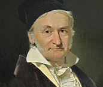

<div class="container-fluid">
    <div class="row">
        <div class="col-lg-9">
            <h2 id="titulo">Análise sensorial de preparações funcionais dedenvolvidas para escolares <br>
                entre 09 e 15 anos, do município de Campinas/SP</h2>
                
                <div id="capaVideo">
                    <P id="tituloCapa">Análise sensorial de preparações funcionais desenvolvidas para escolares entre 09 e 15 anos, do município de Campinas/SP </P>
                    <div id="posicao">
                        <div id="circulo"></div>
                        
                    </div>
                    <div id="posicao2">
                        <p id="txtCapa1">Beatriz Christiane Melo</p>
                        <p id="txtCapa2">FCA / Universidade Estadual de Campinas</p>
                    </div>
                </div>
        </div>
        <div class="col-lg-3">
            <div id="posicaoBotao">
                <span id="botaoMargem" class="botao1">
                    
                    Download
                </span>
                <span class="botao1">
                    
                </span>
                <span class="botao1">
                    
                </span>
                <p id="txt1"><b>COMO CITAR ESSE TRABALHO?</b></p>
            </div>
            <div>
                <div id="blocoDetalhes">
                    <div id="topoDetalhes">
                        <p id="tituloDetalhes"><b>Detalhes</b></p>
                    </div>
                    <p id="descricaoDetalhes">
                        Tipo de Apresentacbo: <b>Póster</b> <br>
                        Eixo temático: <b>Alimentação e saúde (AS)</b> <br>
                        Palavras-chcwes: <b>Alimentos <br>
                        funcionais, alimentaçõo escolar.</b> <br> <br>
                        <b>Autores:</b> <br>
                        Galileo Galilei <br>
                        Berta Lange de Morretes <br>
                        Isaac Newton <br>
                        Cesar Lattes <br>
                        Stephen Hawking <br>
                    </p>
                    <p id="descricao2"><br>
                        Universidade Estadual de Campinas
                        Universidade de São Paulo
                        lnstfuto Nacional de Pesquisas Espaciais
                        Universidade Federal do Rio de Janeiro
                    </p>
                </div>
            </div>
        </div>
    </div>
</div>